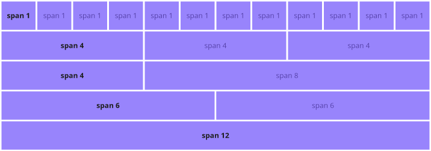

-
Qué es un framework?
Un framework o 'marco de trabajo' es un conjunto de
herramientas, librerias y normas que se utilizan para
facilitar el desarrollo de software. En este caso el
desarrollo front-end.
-
Qué es Bootstrap? Es un framework front-end
que combina CSS y JavaScript para estilizar elementos HTML
de una página de manera sencilla. Una de sus principales
características es permitir la adaptación de la página segun
el dispositivo utilizado.
-
1.-
Al crear un archivo HTML con su respectiva estructura
inicial debemos verificar que en la etiqueta head se
encuentre el siguiente metadato:
<meta name="viewport" content="width=device-width,
initial-scale=1">
En general este meta viene por default, pero es importante
que este declarado para que la pagina pueda ser responsive
(o adaptable al dispositivo).
-
2.- Incluir la hoja de estilo CSS provista
por el CDN (Content Delivery Network) de Bootstrap dentro de
la etiqueta head.
https://cdn.jsdelivr.net/npm/bootstrap@5.3.0-alpha3/dist/css/bootstrap.min.css
-
3.-
Si queres utilizar las características de Javascript tenes
que agregar el script JS, también provisto por el CDN de BS,
dentro del body, pero en la ultima línea.
https://cdn.jsdelivr.net/npm/bootstrap@5.3.0-alpha3/dist/js/bootstrap.bundle.min.js
Qué funcionalidades se agregan?
- Alertas de errores
- Estados de botones
- Funcionalidades checkbox - radio
- Carrousell de imagenes
- Controles e indicadores
-
Menues desplegables como este que estamos utilizando.
-
Todo muy lindo, pero qué es un CDN? Un CDN
(Content Delivery Network) es un grupo de servidores
distribuidos en diferentes ubicaciones geográficas de todo
el mundo para permitir la entrega rápida del contenido de un
sitio web. También se conoce como red de distribución de
contenidos.
Cuando un usuario se conecta a un sitio web, la distancia
física entre él y el servidor de alojamiento web afecta al
tiempo que tarda el contenido en aparecer en la pantalla.
Además de reducir el consumo de ancho de banda, la red de
centros de datos distribuida globalmente mejora la velocidad
de entrega de los contenidos para los usuarios,
independientemente de su ubicación en relación con el
servidor principal.
Para conseguirlo, un sistema de caché almacena copias
temporales de los archivos del sitio web en el servidor
proxy más cercano al usuario, acelerando el tiempo de carga
de la página.
-
Los breakpoints son puntos de quiebre en el ancho de
pantalla en los que se aplican ciertos estilos CSS. Estos
breakpoints se utilizan para diseñar sitios web responsivos
que se adapten a diferentes tamaños de pantalla, como en
dispositivos móviles, tablets, computadoras de escritorio,
etc.
-
Bootstrap incluye 6 breakpoints por default.
-
| Breakpoint |
Class infix |
Dimensions |
| Extra small |
None |
<576px |
| Small |
sm |
≥576px |
| Medium |
md |
≥768px |
| Large |
lg |
≥992px |
| Extra large |
xl |
≥1200px |
| Extra extra large |
xxl |
≥1400px |
-
Dentro de cada breakpoint hay 12
columnas abstractas.
-
